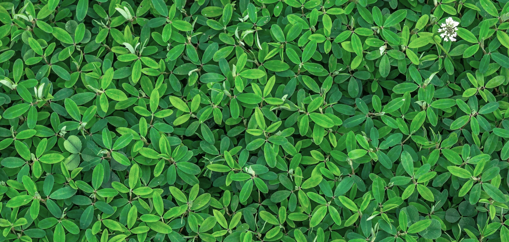
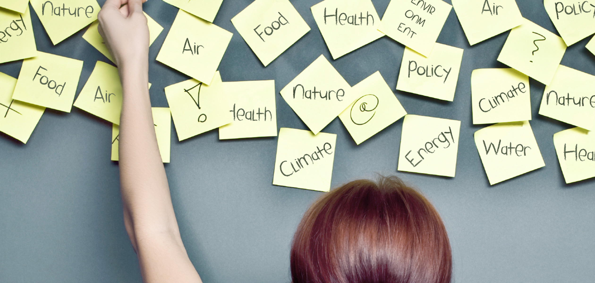

{{> partials/head }}
{{> partials/header-topics }}

<main class="wrapper container-fluid">
  <div class="cover cover--black">
    <div class="cover__image-container">
      
    </div>
    <div class="cover__box">
      <div class="cover__text">
        <div class="cover__pretitle">FLIS topics</div>
        <h2 class="cover__title">Resources nexus</h2>
        <i class="cover__icon icon icon--database"></i>
        <div class="cover__description">European environmental policy measures have proven to be particularly effective when it comes to tackling local, regional and continental environmental pressures.</div>
      </div>
      <a href="#" class="btn">Find out more</a>
    </div>
  </div>

  <div class="layout--white">
    <div class="block block--title-decoration">
      <h2 class="block__title">Table of contents</h2>
      <div class="block__content">
        <a href="topics-resources-story.html" class="dictionary-item dictionary-item--variation">
          <div class="dictionary-item__letter">1</div>
          <h3 class="dictionary-item__title">Where do we stand? Energy - water - food trendsat the European level</h3>
        </a>

        <a href="topics-resources-story.html" class="dictionary-item dictionary-item--variation">
          <div class="dictionary-item__letter">2</div>
          <h3 class="dictionary-item__title">What is being done? European policies on water, energy and food</h3>
        </a>

        <a href="topics-resources-story.html" class="dictionary-item dictionary-item--variation">
          <div class="dictionary-item__letter">3</div>
          <h3 class="dictionary-item__title">Where do we go from here? Greening the economy</h3>
        </a>

        <a href="topics-resources-story.html" class="dictionary-item dictionary-item--variation">
          <div class="dictionary-item__letter">4</div>
          <h3 class="dictionary-item__title">The water-energy axis</h3>
          <div class="dictionary-item__description">
            <p>Overview of the water-energy axis</p>
            <p>Risks for the water-energy axis</p>
            <p>Opportunities to improve the water-energy axis</p>
            <p>Water for energy</p>
            <p>Energy for water</p>
          </div>
        </a>

        <a href="topics-resources-story.html" class="dictionary-item dictionary-item--variation">
          <div class="dictionary-item__letter">5</div>
          <h3 class="dictionary-item__title">The water–food axis</h3>
          <div class="dictionary-item__description">
            <p>Overview of the water-food axis</p>
            <p>Risks for the water-food axis</p>
            <p>Opportunities for the water-food axis </p>
            <p>Water for crops</p>
            <p>The carbon, material and energy footprint of food</p>
          </div>
        </a>

        <a href="topics-resources-story.html" class="dictionary-item dictionary-item--variation">
          <div class="dictionary-item__letter">6</div>
          <h3 class="dictionary-item__title">The energy–food axis</h3>
          <div class="dictionary-item__description">
            <p>Overview of the energy-food axis</p>
            <p>Risks for the energy-food axis</p>
            <p>Opportunities for the energy-food axis</p>
          </div>
        </a>

        <div class="text-center">
          <a href="#" class="btn">Download as PDF</a>
        </div>
      </div>
    </div>
  </div>

  <div class="page-switch">
    <div class="page-switch__prev">
    </div>
    <div class="page-switch__current">
      <div class="page-switch__label">Current:</div>
      Table of Contents
    </div>
    <div class="page-switch__next">
      <div class="page-switch__label">Next:</div>
      <a href="#" class="page-switch__link">Where do we stand? Energy - water- food trends at the European level</a>
    </div>
  </div>

  <div class="layout--default">
    <div class="block">
      <h2 class="block__title">Related stories</h2>
      <div class="block__content">
        <a href="#" class="topics-item topics-item--black topics-item--big">
          
          <div class="topics-item__hexagon"></div>
          <h3 class="topics-item__title">Resources nexus</h3>
        </a>
        <a href="#" class="topics-item topics-item--orange topics-item--big">
          
          <div class="topics-item__hexagon"></div>
          <h3 class="topics-item__title">Energy</h3>
        </a>
        <a href="#" class="topics-item topics-item--aqua topics-item--big">
          
          <div class="topics-item__hexagon"></div>
          <h3 class="topics-item__title">Water</h3>
        </a>
        <div class="clearfix"></div>
        <div class="text-center">
          <a href="#" class="btn">All of stories</a>
        </div>
      </div>
    </div>
  </div>
</main>

<div class="designs designs--topics-resources"></div>

{{> partials/footer }}
{{> partials/scripts }}
